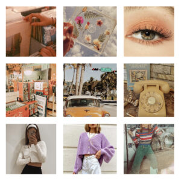

The “Vintage” aesthetic was formed from the modern recreation of the 70s-90s style. The vintage aesthetic can be illustrated through many different mediums such as fashion, photography and even furniture. It's also an aesthetic with the purpose of showing individuality and uniqueness. Main Colors: depends on what fashion era was previously popular
